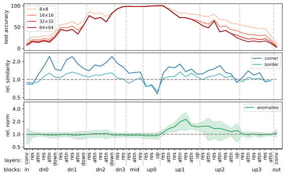
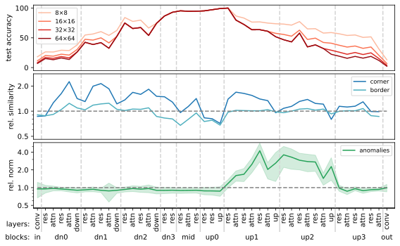
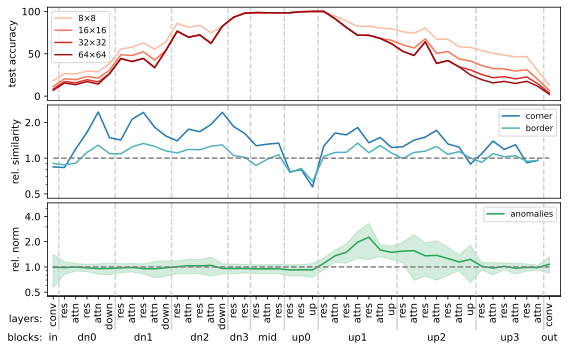
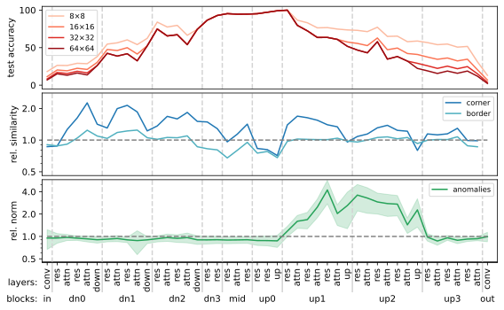
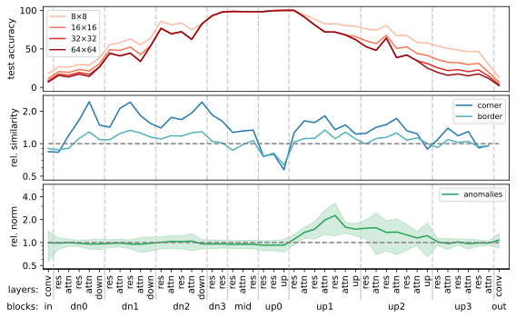
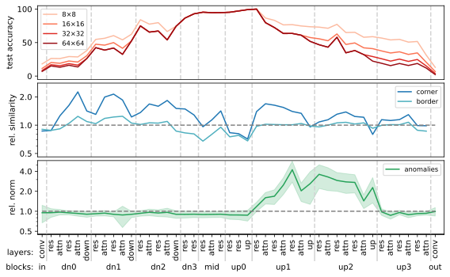

Diffusion models have demonstrated remarkable capabilities in synthesizing realistic images, spurring interest in using their representations for various downstream tasks. To better understand the robustness of these representations, we analyze popular Stable Diffusion models using representational similarity and norms. Our findings reveal three phenomena: (1) the presence of a learned positional embedding in intermediate representations, (2) high-similarity corner artifacts, and (3) anomalous high-norm artifacts. These findings underscore the need to further investigate the properties of diffusion model representations before considering them for downstream tasks that require robust features.
No image selected. Please select an image from the list above.
All displayed similarities are relative to the currently hovered, or last clicked, tile.
Our qualitative analysis reveals three key phenomena in Stable Diffusion U-Net representations:
Positional Embeddings: Representations contain a learned positional embedding, where tokens at similar spatial locations show higher similarities, even across images with different content. This effect is most prominent in the lower blocks of the U-Net.
Corner Artifacts: Tokens located at borders and especially corners often exhibit unusually high cosine similarities to each other, independent of the image content.
High-Norm Anomalies: Groups of neighboring tokens with abnormally high norm and high mutual similarity appear in various layers, particularly at the end of the up1 block. There, these anomalies typically consist of 2×2 token patches.
These phenomena may interfere with the use of diffusion model representations for downstream tasks that require robust features with high spatial fidelity, such as semantic correspondence or dense prediction tasks.
Quantitative Results


Our quantitative analysis confirms the three key phenomena observed in Stable Diffusion U-Net representations. The graphs above show results for three different models (SD-1.5, SD-2.1, and SD-Turbo). The top row demonstrates the accuracy of a linear probe in predicting token positions, confirming that positional information is linearly extractable from representations, especially in lower blocks. The middle row shows the increased similarity between corner tokens relative to non-corner tokens (log-2 scale), revealing corner artifacts across multiple layers. The bottom row displays the relative norm of anomalous tokens compared to the mean norm of all tokens (log-2 scale), highlighting the presence of high-norm anomalies particularly in up-sampling blocks. These findings are consistent across all evaluated models, suggesting these phenomena are inherent to the U-Net architecture used in Stable Diffusion models.
BibTeX
@inproceedings{loos2025latent,
title={Latent Diffusion U-Net Representations Contain Positional Embeddings and Anomalies},
author={Jonas Loos and Lorenz Linhardt},
booktitle={ICLR 2025 Workshop on Deep Generative Model in Machine Learning: Theory, Principle and Efficacy},
year={2025},
url={https://openreview.net/forum?id=BCFNrZcqEL}
}
 


